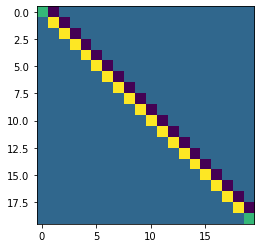

Code
plt.imshow(prec_mat.toarray())
plt.show()
July 2, 2022
from sksparse.cholmod import cholesky
# Hyper-parameters
n = 1000
gamma = 1.0
sigma = 1.0
n_iterations = 1000
# Make main precision matrix
prec_mat = ((1 + (gamma**2))/(sigma**2))*sp.eye(n)
prec_mat.setdiag(-gamma/(sigma**2), k=1)
prec_mat = sp.csr_matrix(prec_mat)
prec_mat[0,0] = 1/(sigma**2)
prec_mat[-1,-1] = 1/(sigma**2)
prec_mat = sp.csc_matrix(prec_mat)
# Setup arrays
x = np.ones(n)
mu = 1
xs = np.zeros((n_iterations, n))
mus = np.zeros(n_iterations)
qxs = np.zeros(n_iterations)
# Some other stuff
one_vec = np.ones(n)
mu_update_prec = 1 + np.sum(prec_mat @ one_vec)
mu_update_sigma = np.sqrt(1/mu_update_prec)
factor_cond_2 = cholesky(prec_mat, ordering_method='natural')
#gmrf_samples[j,:] = factor.solve_Lt(z, use_LDLt_decomposition=False)
# Iterate Gibbs sampling
for j in range(n_iterations):
### Update mu
# Get correct precision
p1 = mu_update_sigma*np.random.normal()
mu = (1/(mu_update_prec))*np.sum(prec_mat @ x)
### Update x
# Get correct precision
p1 = factor_cond_2.solve_Lt(np.random.normal(size=n), use_LDLt_decomposition=False)
# Add mean to get sample
x = mu*one_vec + p1
# Store
xs[j,:] = x.copy()
mus[j] = mu
qxs[j] = np.sum(prec_mat @ x)